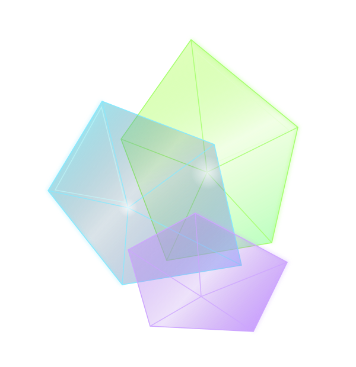

A universe built from primes
Small numbers.
Infinite
possibilities.
Meet the numbers that refuse to be divided.
From your first prime to mathematics' biggest mysteries,
take it one discovery at a time.

020305The learning path / 01—03
Big ideas.
Approachable steps.
You don't need to know everything.
Just choose where to begin.
Start here · Beginner
The foundations
What makes a prime? Meet the atoms of arithmetic and the people who discovered them.
Go further · Intermediate
Patterns & discovery
Find order in the unexpected. Explore sieves, record holders, and the spaces between primes.
Think deeper · Advanced
Beyond the obvious
Clock arithmetic, hidden harmonics, and questions that still challenge the world's best minds.
More than definitions
See it. Use it.
Question it.
Follow a guided level, jump into a visual experiment, or read a research note with its assumptions and limitations made explicit.
Why primes matter ↗
Secure connections, QR codes, finite fields, hashing, and the quantum transition—with a tiny RSA machine you can take apart.
THE VISUAL ATLASMake patterns visible ↗
Explore prime density, sliding windows, the Ulam spiral, and Goldbach pairs. Change the controls; test your intuition.
RESEARCH DESK · 2026At the frontier ↗
Recent published results, record discoveries, and ongoing questions—translated without confusing evidence with proof.
An expanding, curated guide—not a claim to exhaust an entire research field. Browse the topic map and deeper references.
Less observing. More discovering.
Your curiosity.
Your laboratory.
Cross out composites. Uncover primes. Take any positive integer up to 100 trillion apart, one divisor at a time.
Open the playground